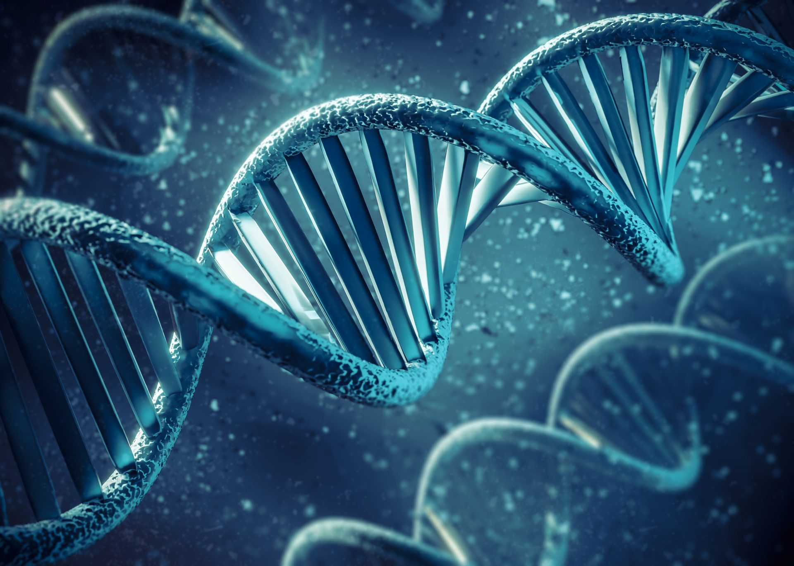
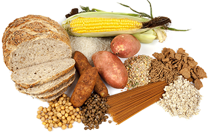
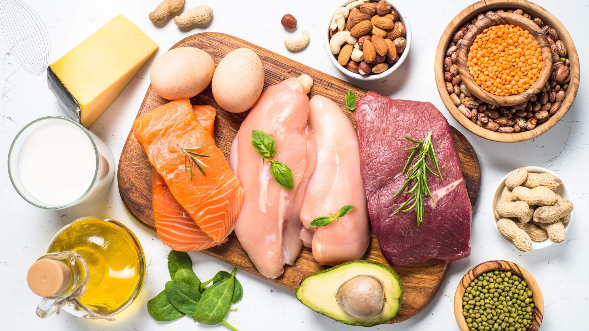

Ácidos nucleicos
São moléculas responsáveis por armazenar e transmitir as informações genéticas dos seres vivos. Os principais são o DNA e o RNA.

Saiba maisValesca Kaely de Lima Viana
Rayssa Maria Oliveira Ferreira
Vitória Lourrayne da Silva Oliveira
Gustavo Linhares Candido
3º informática vespertino
As macromoléculas são moléculas grandes e importantes para o funcionamento dos seres vivos. Muitas são formadas pela união de moléculas menores e participam da estrutura das células, do armazenamento de energia e das funções vitais do organismo.
Nenhum resultado encontrado.
São moléculas responsáveis por armazenar e transmitir as informações genéticas dos seres vivos. Os principais são o DNA e o RNA.

Saiba maisSão nutrientes que fornecem energia para o organismo. São encontrados em alimentos como pães, massas, arroz e frutas.

Saiba maisSão gorduras que armazenam energia, protegem os órgãos e ajudam a manter a temperatura corporal. Estão presentes em óleos, manteiga e abacate.
 Saiba mais
Saiba mais
São moléculas grandes formadas pela união de moléculas menores chamadas monômeros. Podem ser naturais, como proteínas, ou sintéticos, como plásticos.
 Saiba mais
Saiba mais
São moléculas formadas por aminoácidos. Ajudam na construção e reparação dos tecidos e participam de funções importantes, como a defesa do organismo.

Saiba mais